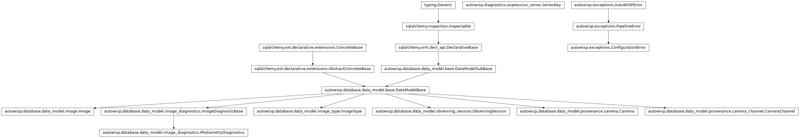

autowisp.diagnostics.exclusion_rules module
Class Inheritance Diagram

Which observations an exclusion rule leaves out of a fit.
An exclusion rule is a boolean expression over the diagnostics and the
project’s expression library, true for what a fit should be derived without
(see check_rule()). The pipeline
engine evaluates the step’s rule here just before running fit_magnitudes,
epd or tfa, and hands the step the result as its exclusion list.
Nothing is stored: the rule is evaluated again whenever a step is prepared.
The observations decided for are those fit together, given as (image,
channel) pairs: a magnitude fitting batch, or the lightcurve points of one
single photometric reference. The rule is not evaluated over that group,
though, but over the populations an expression is always evaluated over, one
session’s frames of one type, split by photometric reference where the rule
reads something fit_magnitudes produces. An aggregate in a rule therefore
means what it does in a plot of the same expression, and the group merely
selects which verdicts are used.
What a verdict applies to follows from what the rule takes:
a channel slot: the channel it was bound to. Without one the rule reads only quoted channels, and its verdict applies to every channel of the image;
a photometry slot: the photometry it was bound to. Without one the verdict applies to every photometry.
- autowisp.diagnostics.exclusion_rules._check_readable(rule, needed, camera_channels, recorded_photometries)[source]
Refuse a rule reading a channel or a photometry its population lacks.
Values not recorded are padded with NaN, which compares false, so a rule reading a channel the camera does not have, or a photometry that was never extracted, would otherwise keep every image without saying so.
- Parameters:
rule (str) – The rule, for the message.
needed (dict) –
{name: set of (channels, photometries)}: what the rule reads, quoted or bound, itself or through the library.camera_channels (set) – The channels the population’s camera has.
recorded_photometries (set) – The photometry ids recorded for the population.
- Raises:
ConfigurationError – Naming what is missing.
- autowisp.diagnostics.exclusion_rules._evaluate(series_key, wanted, library, db_session)[source]
Return the verdicts of the rule in library over one population.
- Parameters:
- Returns:
- dict:
{(channels, photometries): bool array}, true where the rule excludes.
numpy.ndarray: The image ids the arrays run over.
- dict:
- Return type:
- Raises:
ConfigurationError – If the rule does not give true or false.
- autowisp.diagnostics.exclusion_rules._exclude_in_population(library, population, member_channels, db_session, *, excluded)[source]
Add to excluded the members of one population that the rule excludes.
- Parameters:
library (dict) – The project’s library with the rule added.
population (tuple) – The session id and the name of the image type.
member_channels (dict) –
{image_id: [channel, ...]}: the observations of the population being decided for.db_session – An active SQLAlchemy database session.
excluded (dict) –
{photometry: set of (image_id, channel)}, asget_excluded()returns, updated in place.
- autowisp.diagnostics.exclusion_rules._get_camera_channels(session_id, db_session)[source]
Return the names of the channels the camera of a session has.
- autowisp.diagnostics.exclusion_rules._get_populations(members, db_session)[source]
Split the given members by (session, image type) ready for evaluation.
- Parameters:
members –
(image_id, channel)pairs.db_session – An active SQLAlchemy database session.
- Returns:
{(session_id, image_type): {image_id: [channel, ...]}}.- Return type:
- autowisp.diagnostics.exclusion_rules._get_recorded_photometries(session_id, image_type, db_session)[source]
Return the photometry IDs with photometry diagnostics for population.
- autowisp.diagnostics.exclusion_rules._report_fractions(rule, excluded, num_members)[source]
Log how much of what is fit together rule excludes.
- autowisp.diagnostics.exclusion_rules.conspicuous_fraction = 0.5
the engine logs it as a warning, and the BUI highlights it.
- Type:
More than this fraction of a fit left out is conspicuous
- autowisp.diagnostics.exclusion_rules.get_excluded(rule, members, db_session, *, before_magfit=False, report=True)[source]
Return the observations fit together that rule leaves out of the fit.
- Parameters:
rule (str) – The exclusion rule.
members –
(image_id, channel)pairs: the observations fit together, which are the ones decided for.db_session – An active SQLAlchemy database session.
before_magfit (bool) – Whether the fit is the magnitude fit itself, which nothing it produces can be read ahead of.
report (bool) – Whether to log the fraction excluded, as the engine does for every fit. A preview shows it instead.
- Returns:
{photometry: set of (image_id, channel)}: the excludedmembers. Under the single key
Noneif the rule takes no photometry slot, its verdict then applying to every photometry, and otherwise under each photometry id recorded for the members, those nothing is excluded in included.
- Return type:
- Raises:
ConfigurationError – If the rule is malformed, reads a channel or a photometry the images do not have, reads what magnitude fitting produces when before_magfit, or does not give true or false.
- autowisp.diagnostics.exclusion_rules.get_rule_reads(library)[source]
Return the library expressions usable as exclusion rules, as configured.
A rule names a library expression by a read binding the slots it takes, the channel slot to the channel being decided for and the photometry slot to the photometry:
cloudy,cloudy[0],cloudy[()][0]orcloudy[0][0]. Whether an expression gives true or false is not known until it is evaluated, so one giving numbers is listed too.
- autowisp.diagnostics.exclusion_rules.preview_excluded(rule, image_ids, db_session, *, channel, photometry)[source]
Return the images rule excludes, as the engine would decide for them.
Each image is decided for in the given channel and photometry, which the rule’s slots are bound to, and within the population the engine evaluates it over, so that what a preview shows is what a fit would leave out. Nothing is refused for reading what magnitude fitting produces: that only matters for the rule of the magnitude fit itself, which the engine checks when it runs it.
- Parameters:
rule (str) – The exclusion rule.
image_ids (iterable) – The images to decide for.
db_session – An active SQLAlchemy database session.
channel (str or None) – The channel the rule’s channel slot is bound to, None for a rule without one.
photometry (int or None) – The photometry id the rule’s photometry slot is bound to, None for a rule without one.
- Returns:
The ids of the images excluded.
- Return type:
- Raises:
ConfigurationError – As
get_excluded()does, or if the rule takes a slot nothing is bound to.
- autowisp.diagnostics.exclusion_rules.summarize_excluded(excluded, num_members)[source]
Return how much of what is fit together each verdict of a rule excludes.
- Parameters:
excluded (dict) – What
get_excluded()returned.num_members (int) – How many observations are fit together.
- Returns:
- A dict per photometry, in order of id:
photometry, its id, None for a rule deciding for every photometry at once;
excluded, how many observations it excludes;fraction, what fraction that is of those fit together; andconspicuous, whether it is aboveconspicuous_fraction.
- A dict per photometry, in order of id:
- Return type: